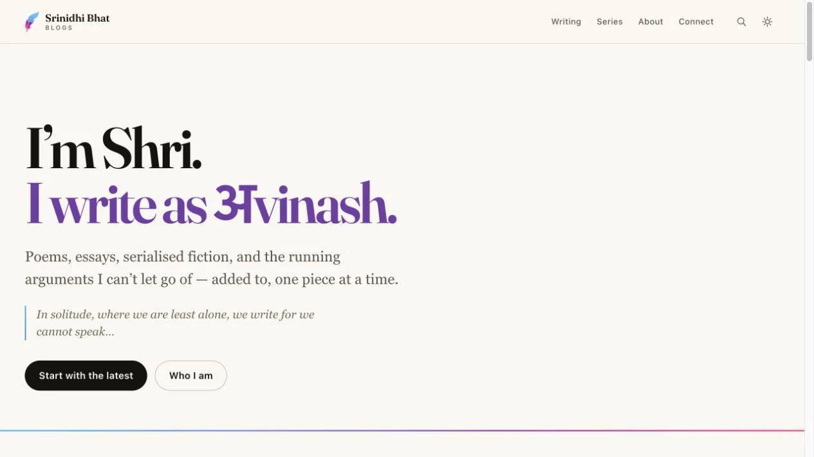

The BlogProduct story · 4 min read
A home for my writing, in the form it needs.
An editorial site with a browser-based publishing workflow for poems, essays, fiction, and serial writing.
Read the case study
Original writing homepage under the name अvinash, with poems, essays, fiction and a written podcast.
View full size ↗01 The problem
What should the author have to think about after the writing is done?
A personal writing practice should not require a technical deployment ritual for every post. The Blog connects a reading experience with a browser editor that handles content, images, drafts, and publishing through a familiar form.
Designed for Writer publishing & reader continuing a piece. Preserve the form of the writing and a clear route to the next piece.
User context Design assumption
An author moves from draft to release; a reader moves between related writing.
- The friction
- Publication states and implicit series conventions can be difficult to understand.
- Design implication
- Give drafts, verse, and series explicit structure.
Example situation · illustrative scenario. Imagine finishing a poem and then having to switch from writing into a development workflow. The mechanics of publishing can become a reason to put the piece aside.
02 The direction
The form is part of the writing
Publishing state belongs in the editor. A draft, a save, and a live page are different moments that need clear feedback.
Product artifact · editorial workflow
My direction. I connected a browser editor with a content-aware reading experience, respecting verse and serial writing along the way.
Process and product scope
I framed writing, reviewing, and publishing as separate commitments. The editor should support the author’s work without requiring technical knowledge of how a post reaches the website.
The reading experience follows the form of the writing: poetry keeps its line breaks, while topics and series help a reader continue. Publication feedback should make draft and live states easy to distinguish.
- 2
- reader and author workflows
- Drafts
- explicit publishing control
- Verse
- preserved line breaks
- Compose
Work through an editorial interface.
- Review
Keep draft status and content choices visible.
- Release
Carry the saved piece through the build into the reading experience.
03 Design decisions
Make it easy to find and continue reading.
Open a decision to see the reasoning and trade-off.
01Give publishing a clear state
Draft and published are separate states, with a deliberate release action.
Why this matters. Writing and releasing a piece are different commitments and should remain distinguishable.
The trade-off. Publishing can take time. The author needs clear confirmation of what is saved and what is live.
02Let the content form affect the layout
Poetry preserves line breaks and an appropriate verse treatment, while ordinary articles retain a reading layout.
Why this matters. The way a piece is written can be part of its meaning.
The trade-off. Formatting conventions must be discoverable in the editor rather than depend on hidden technical knowledge.
03Make ongoing writing navigable
Topics and series connect related pieces within the editorial structure.
Why this matters. A reader should be able to follow a thread without knowing the order it was published.
The trade-off. The documented title-based series matching is convenient but implicit; a visible series field would make mistakes easier to avoid.
04 The outcome
A home for drafts, poems, and continuing stories.
I gave poems, essays and ongoing stories a reading structure suited to each form. The publishing flow separates drafts from release, while topics and series help a reader continue. Poetry keeps its line breaks instead of being squeezed into an ordinary article template.
More about the experience
- An editorial front door. The site introduces the writing in its own visual voice.
- A workflow behind it. The browser editor supports the ongoing publishing practice.
05 Reflection
The tool should respect the shape of the writing.
I would make draft status and series membership more explicit in the editor. Those small details affect whether I can publish the right version and whether someone can find the next part of a story.
What I would evaluate next proposed work
- publish a draft, update an existing post, and add a series instalment without using development tools.
- accidental publication, broken links after slug edits, and clarity about whether the latest save is live.
Get everyone in. Keep the round moving.